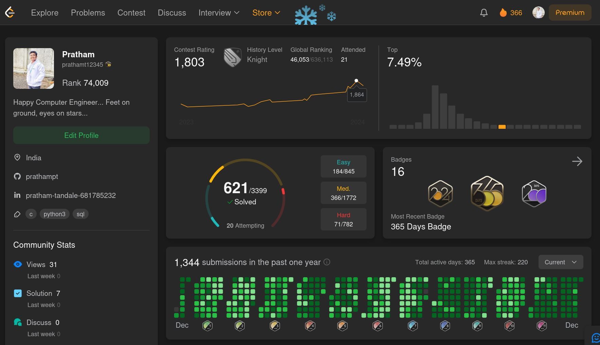

We are already heading towards the end of 2024. How fast time flies by!
Consistency and discipline throughout the year helped me to achieve these figures in following images; but, do they really matter?

Numbers on your online profile does not matter unless they carry some actual meaning with them. Don't go for numbers, go for the practical skills they are offering to you...
Don't solve DSA questions just to increase the number of questions you have solved; solve them to learn. Learn patterns, learn approaches and learn the hidden meaning behind them. DSA is not just a tool to crack interview, but it really helps to shape our thought process and to think like a computer.
Don't push code to GitHub to color your "green wall"; carve out some meaningful projects with the help of your skills. Do projects which will really help society, your friends or at least you to do things in a better way.
Make learning your first priority, let success be its by-product.
Taking actions with some reward in mind is not bad, but remember the ultimate goal is to grow, not to win! Change approach, do the same thing with different mindset, in a different way, for a different cause and you'll see the 'different you' altogether!
Be consistent with your actions, be disciplined with your commitments. Then 'luck' is nothing but pure initial practice, hidden to everyone else.
Here are few things I learned this year (You can find these at CSI TY Diaries):
Learn to digest failures!
It's not the end of the world if you fail. Cry for an hour and then start again. Don't let your failure affect your next performance.
All days are not the same!
You might feel like not doing anything. Just push yourself a little, and do the smallest version of what you do daily.
Breaks are important!
If you can solve 10 DSA question daily continuously for 30 days, then trust me, you need to consult a doctor 😯
Make yourself Resilient!
Whatever breaks your streak, start again!
Resume is important!
Invest time, keep it short and crisp, review it from seniors.
Do unique projects!
Projects don't stand out in interviews, the ideas behind them do.
Start already!
If you haven't, 'now' is the best time to start.
Think Loudly!
Let the interviewer know what you are thinking, so utter all the words which you are thinking.
Enjoy the process!
The more you enjoy the interview, the more likely it is that they will select you.
Also, life is way bigger than this. This is not life, just a part of life. Thus, remember to smile...
Just smile for no reason, and this will become the reason for your happiness...